To get a clear understanding and to visualize the dynamics and control implementation of various systems starting from basics and extending it to drone, a simulink model will be built after thoroughly understanding the drone dynamics.
Today, drones are everywhere, from ultra high tech military devices to toys for kids going through advanced flying cameras and much more. How do such ”apparently” simple machines achieve such precise and impressive flights in varying unstable and unpredictable environmental conditions.
In this project the drone is assumed to be made of two beams placed perpendicular to each other as shown in the images.
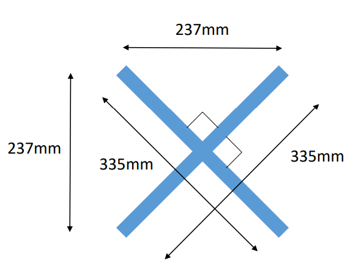
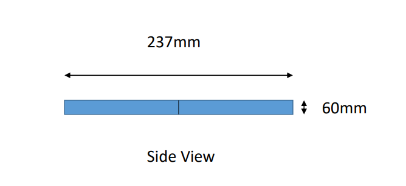
A lithium battery of nominal voltage 11.4 V is used.
Voltage vs Rpm values for a standard brushless dc motor is taken and used as a reference. And based on this data an approximate equation directly relating voltage and Rpm is obtained and used in the simulation model.
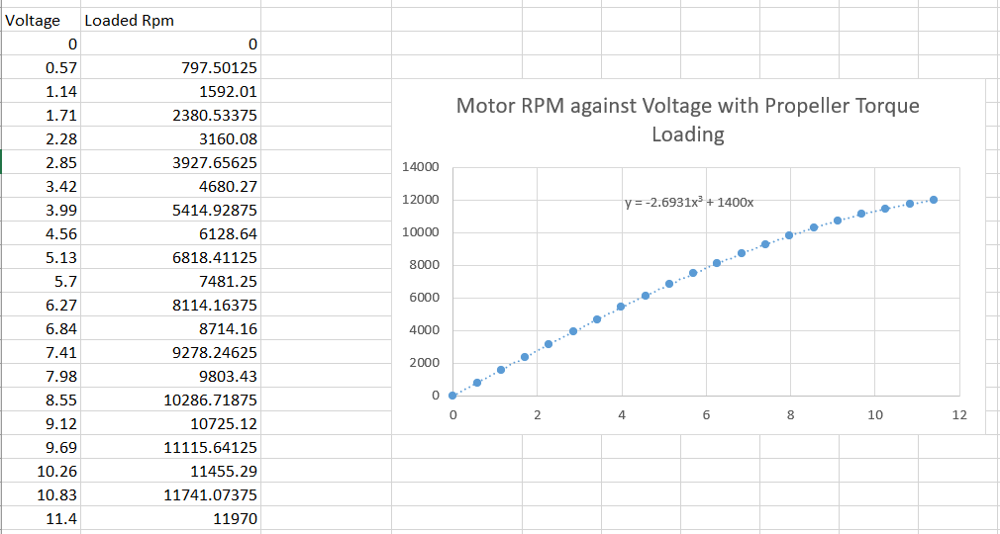
The section of the propeller blades are similar to the airfoil section, so when accelerated rotationally will produce a thrust force upwards, and a torque due to the drag forces which opposes the motion of the propeller. So the propeller also should produce a equivalent torque to overcome the drag and load, and to keep the propeller in motion.
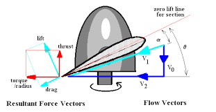
thrust = ct ∗ 𝜌 ∗ 𝑛² ∗𝐷^4
ct ->coefficient of thrust
𝜌-> density of air
n-> number of revolutions per second
D-> diameter of propellers
The value of ct is found to be related to the rpm by this equation
ct = (2x10^-15)*Rpm^3 - (4x10^-11)*Rpm^2 + (3x10^-7)*Rpm
Torque is related to Rpm using this relation
tq = (4x10^-14)*Rpm^3 + (8x10^-12)*Rmp^2+ (3x10^-6)*Rpm
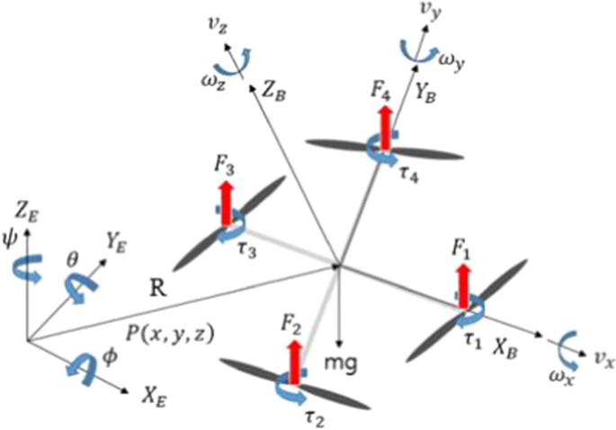
In the x direction: 𝐹𝑥 = 𝑚𝑎𝑥
In the y direction: 𝐹𝑦 = 𝑚𝑎𝑦
In the z direction: 𝐹𝑧 = 𝑚𝑎z
About the x-axis: Mx =
About the y-axis: My =
About the z-axis: Mz =
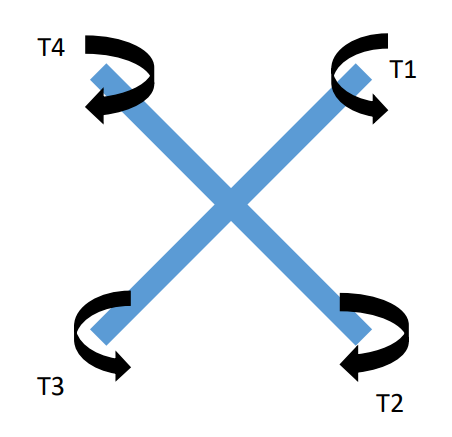
𝑀𝑧 = 𝑇4 − 𝑇1 + 𝑇2 − 𝑇3
𝑀𝑥 = (𝐹3 + 𝐹4) ∗
0.237/
2
− (𝐹1 + 𝐹2) ∗
0.237/
2
𝑀𝑦 = (𝐹3 + 𝐹2) ∗
0.237/
2
− (𝐹4 + 𝐹1) ∗
0.237/
2
𝐹𝑝𝑟𝑜𝑝𝑥
= sin ∗ cos𝜃 ∗ (𝐹1 + 𝐹2 + 𝐹3 + 𝐹4)
𝐹𝑝𝑟𝑜𝑝𝑦
= sin𝜃 ∗ cos ∗ (𝐹1 + 𝐹2 + 𝐹3 + 𝐹4)
𝐹𝑝𝑟𝑜𝑝𝑧
= cos𝜃 ∗ cos * (𝐹1 + 𝐹2 + 𝐹3 + 𝐹4)
Normally drone control system consist of two control blocks, position control and attitude control. But this project focuses only on the attitude control block plus the throttle control.
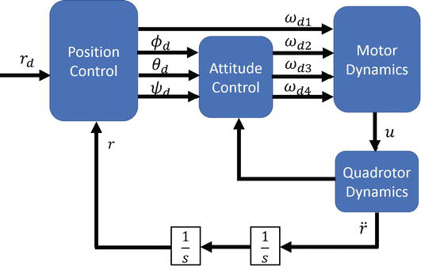
Input : Voltage[V] (4x1 - vector)
Output : Thrust[F] torque[T] (4x1 - vector)
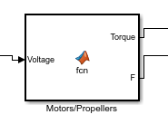
In this block the voltage supplied to each motor is taken as an input and the thrust and the torque generated by each motor is given as an output.
Input : Thrust[F] Attitude[theta] Vecocity[v]
Output: Acceleration[a]
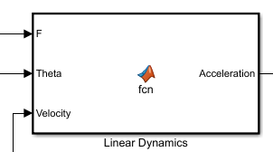
Here theta denotes the roll, pitch and yaw angles. Velcoity is taken as an input to calculate the drag forces.
Input: Thrust[F] Torque[T]
Output: Angular acceleration[alpha]
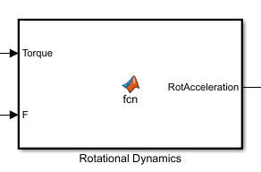
With the help of rigid body equations and calculated values of moment of inertia, the angular acceleration vector is calculated using the thrust and torque values.
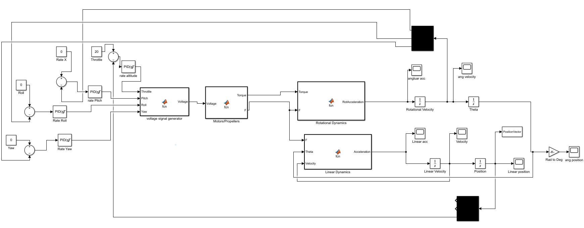
The simulink model consist of four PID controllers
1-> For attaining the desired altitude.
2-> For attainging the desired pitch rate.
3-> For attaining the desired roll rate.
4-> For attaining the desired yaw rate.
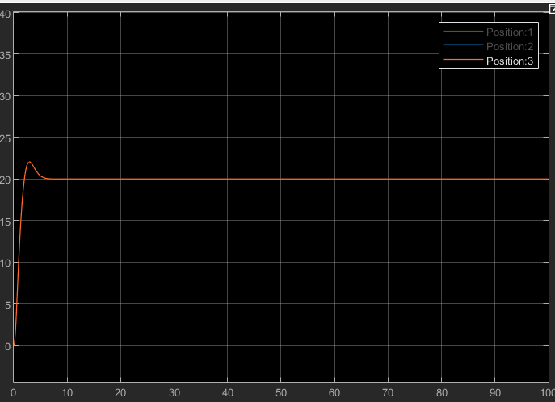
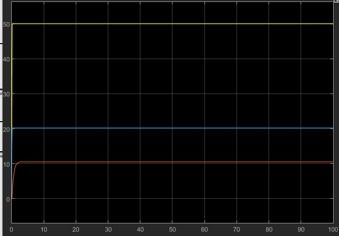
First plot shows the altitude as a function of time. In this simulation the attitudes are assumed to be constants.
Second plot shows the angulare velocities as a function of time, here throttle input is assumed to be constant.